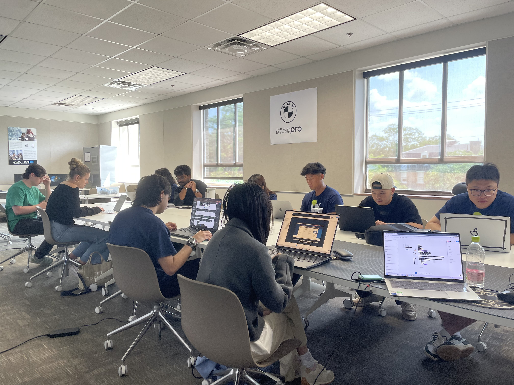
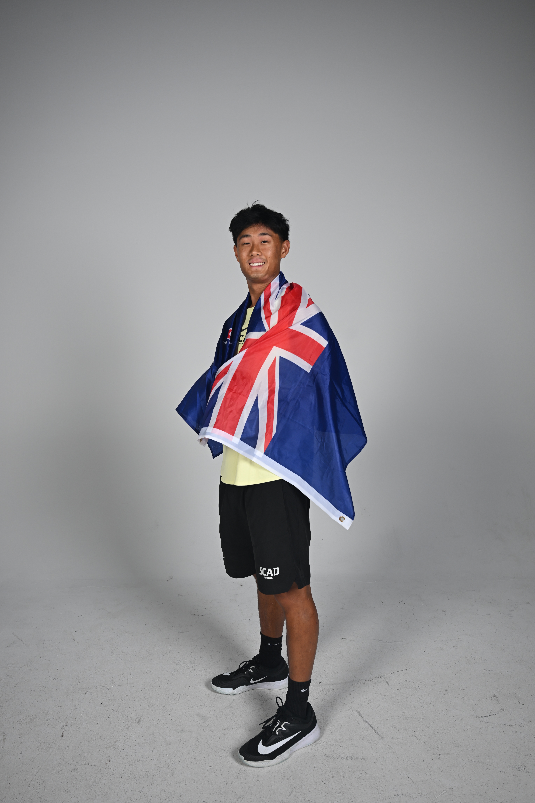

A Little Bit About Me
I love Chipotle!

In short
Born and raised in New Zealand, I am currently pursuing my BFA in User Experience Design at the Savannah College of Art and Design.

Exploring nature
Why UX?
After beginning my studies in law and accounting, I realized my passion was to care more about understanding people and designing solutions that truly help them.
SCAD's UX Design program was the perfect fit. It allowed me to solve real world problems and get experience in multiple disciplines and mediums. Most importantly, I found an incredible group of talented peers who were just as obsessed with design as I am.

Collaborating with teammates at SCAD
Life at SCAD
Design challenges, insightful events, and being a student-athlete. Every facet of SCAD has benefitted me as a designer, community leader, and person.
Outside of design, I've been a musician for most of my life. I grew up playing piano and violin, and picked up guitar during COVID. When I can, I love trying new food spots and exploring nature.



SCAD Men's Tennis Team
Experiences
FINRA - Contract
UX Designer
Winter 2026
Deloitte - Contract
UX Researcher
Spring 2025
Education
Savannah College of Art and Design
BFA User Experience Design
2024 - 2027